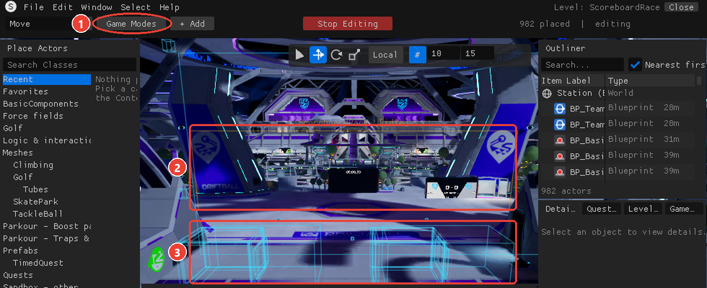
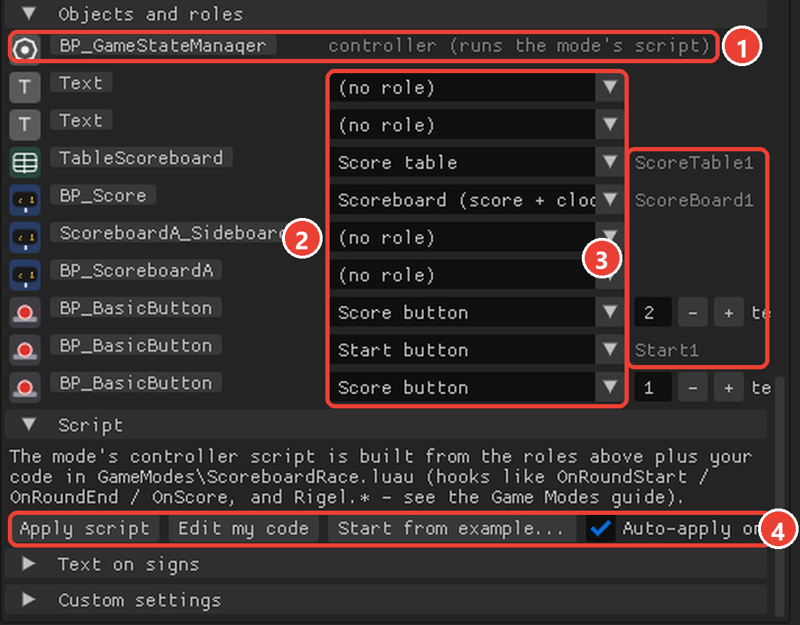

The MCP server is rigel_mcp.py in this folder (Documents\RigelScripts\mcp\). It needs Python 3.9+ and nothing else. It talks to the Spec Editor running on the same PC (the editor listens on 127.0.0.1:47650; loopback only, so nothing outside the PC can reach it).
claude mcp add rigel -- python "%USERPROFILE%\Documents\RigelScripts\mcp\rigel_mcp.py"claude_desktop_config.json): "mcpServers": { "rigel": { "command": "python", "args": ["C:\\Users\\<you>\\Documents\\RigelScripts\\mcp\\rigel_mcp.py"] } }~/.codex/config.toml): [mcp_servers.rigel] with command = "python" and args = ["C:\\Users\\<you>\\Documents\\RigelScripts\\mcp\\rigel_mcp.py"]python rigel_mcp.py --selftest prints the editor's status (or says the editor isn't running).The agent acts as you: it has exactly your editor permissions (owner locks, levels, what the server allows). Everything it does is visible to everyone on the server, like your own edits. Undo works on its edits too.
[x, y, z]. The station is a rotating cylinder around the world Y axis; "down" points away from the axis. On the main floor near spawn, the floor is around z = -27000 to -29500 depending on the district, so look at nearby objects' Z (list_objects) before placing things. Rotations are [pitch, yaw, roll] in degrees.2368C681-D689-59C7-3922-DAB4DCB2B201, sometimes with _n after it). Every tool that acts on an object takes the handle. Handles can change when an object is rebuilt (a move, attaching a script), so re-list objects after such edits if a handle stops working.level_new(name) or level_open(name)). Objects you place belong to it; level_save writes Documents\RigelLevels\<name>.a2level with every object, its Game data, its scripts and its script wiring, and any game modes. Levels load back exactly.replicated: false are local only.PhysicalComponent.onOverlapByPlayerServer fires on the server only, onOverlapByPlayerClientside only on the player's machine. For game modes, Rigel.* actions only take effect on the server, so it's safe that every machine calls them.spawnBall, spawnBallWithParameters): every machine makes its own ball that nobody else can see. Give a ball spawner the game mode role ball, and the server spawns/resets it.BeginPlay(). Put setup in BeginPlay. Attaching or updating a script rebuilds the object (a fresh start).log(...) and warn(...) go to each machine's game log as LogLuau: Display: [Name.luau]: .... Errors appear there too. The MCP reads the editor's own log (script_logs), which is enough because the editor runs every script as well.Every top-level local Name: Type = ... becomes a property of the object. Only these types can be properties:
| Type | What it is |
|---|---|
number, string, boolean | a value the user sets in Details (the = value is ignored -- it comes from the editor) |
SomethingComponent | a slot: a reference to another object's component, wired in the editor |
Any other annotation on a top-level local -- a table type {number}, {[string]: boolean}, a function type () -> (), a union number | string -- crashes the server and every client. The server strips such annotations before running, but don't write them:
local scores: {number} = {} -- WRONG: crashes (table type) local scores = {} :: {number} -- right: a cast on the value, not a typed local local onDone: () -> () = function() end -- WRONG: function type local onDone = function() end -- right local speed: number = 5 -- a PROPERTY: starts as whatever the editor says (nil if unset), not 5 local speed = 5 -- a plain variable: 5
Inside functions, annotate freely (local x: {number} = {} inside BeginPlay is fine).
local Door: PhysicalComponent = nil -- a slot (typed top-level local of a Component type) local Button: BasicButtonComponent = nil function BeginPlay() if (Door :: PhysicalComponent?) == nil or (Button :: BasicButtonComponent?) == nil then warn("wire Door and Button") -- unwired slots are nil return end Button.onButtonPressEvent.Listen(function() Door:hideLua(); Door:disableCollisionLua() end) end
Wire with set_script_reference(handle=<scripted object>, script="Name", slot="Door", type="PhysicalComponent", target=<door's handle>). find_reference_targets(type) lists objects that have that component. A slot may point at the object itself (target = its own handle).
component:methodName(args) (C++ SetCupVisibility becomes setCupVisibility)..Listen: Button.onButtonPressEvent.Listen(function() ... end).VRPawn.getPlayerName(id), LuauClock.timeout(2), Vector.new(x, y, z).LuauClock.timeout(sec):andThen(function() ... end) (a Promise, also :await() inside Promise.new), LuauClock.createTimer(everySec, function() ... end) repeats, LuauClock.getTime() seconds.+ - * /, .x .y .z. score {n} `.luau_api_search("timer"), luau_api_class("TimerComponent").| Component | Methods | Events |
|---|---|---|
BasicButtonComponent (buttons) | luaEnableButton(), luaDisableButton(), setButtonText(s), setOnCooldown(b) | onButtonPressEvent() |
ToggleableComponent (traps, switches, platforms) | luaEnable(), luaDisable() | blueprintOnEnabled(), blueprintOnDisabled(); field isEnabled |
PhysicalComponent (almost any placed piece) | hideLua(), showLua(), disableCollisionLua(), setDefaultCollision(), setTriggerCollision(), hideLuaClientside() | onOverlapByPlayerServer(playerId), onOverlapByPlayerClientside(), onOverlapByDisc(disc), onHitByDisc(disc), onOverlapEndByPlayerSimple() |
TimerComponent (Timer) | start(seconds), startCountUpFromZero(), stopAndResetTimer() | finished() |
BallSpawnerComponent (ball spawners) | getSpawnedBall(), resetBall(), smoothResetBall() -- not spawnBall | discWasSpawnedWithDiscArg(disc), onBallGrounded() |
DiscEntity (a ball) | freeze(hideOutline), unFreeze(b), setVelocity(v), getDiscVelocity(), getDiscPosition(), getGravityDirection() | onGoToSleep() |
ScoreComponent (the classic Score board) | setTeamPoints(team0based, n), getTeamPoints(t), resetScore() | onScored(goalInfo) |
DataTableComponent (Score table) | beginDataTransaction(), setCellText(text, row, col), endDataTransaction() | |
VRPawn (statics) | getLocalPlayerIndex() (-1 on the server), getPlayerName(id), getTeamIndexByID(id), getPositionByID(id), getPlayerByID(id) | |
Quests (statics) | event(playerId, eventId), eventNumber(...), complete(playerId, questId) (-1 = local player) | |
Gamemode (the area's game mode) | getStringConfigVariable(k), broadcastEventString(name, value), setTeamScore(team0, n), setTeamRoundsWon, startGame(), stopGame() | onConfigChanged (doesn't fire -- poll) |
There is no TextComponent from scripts (a slot of that type stays nil). Text goes through templates: set a Text object's text to Score: {score} (tool set_text), then any script calls Gamemode:broadcastEventString("score", "3") (or Rigel.setText("score", "3")): the server fills {score} into every Text object using it, for everyone.
Always, for every script:
luau_api_class for each component you'll touch; luau_examples for a working example of something similar; station_scripts for how the game itself does it.check_luau(source) -- type-checks against the game's API (wrong method names, wrong argument types, nil misuse) and flags the game's traps (crashing typed locals, client-side ball spawns, endless loops). Fix every error. Warnings deserve a look.attach_script(handle, name, source) -- refuses if the check fails. It waits a few seconds and returns the game log lines the script produced, the editor's own log and any problems the editor shows.log() lines prove it ran. A runtime error looks like [string "Name.luau"]:12: attempt to index nil with 'luaEnable' (line 12 of your script), or for errors inside promises: Unhandled Promise rejection: ... [string "Name.luau"]:4: <message>.update_script(name, source) (checked again; every object running it gets the new version). script_logs(mark=...) shows only newer lines: note mark from one call and pass it to the next.set_script_reference, then check the log again (wiring rebuilds the object; BeginPlay runs again).level_save when it works.Defensive habits that keep scripts from failing on some machines:
pcall(function() ... end).LuauClock.createTimer / timeout.VRPawn.getLocalPlayerIndex() is -1 on the server and on desktop spectators.Look around: editor_status (start here), list_objects(filter, near, radius, limit), search_palette(query, category), get_properties(handle, sub_path), get_game_data(handle), station_scripts(name), level_list, gamemode_list, editor_logs(since, filter), editor_problems.
Build: place_object(item, location, rotation, scale) returns the new object; move_object(handle, location, rotation, scale); duplicate_object(handle, location); delete_object(handle); select_object(handle) (shows it to the user); set_camera(location, pitch, yaw | handle); undo, redo.
Configure: set_property(handle, path, value) -- values in the wire encoding get_properties shows (numbers, true/false, x,y,z, p,y,r, r,g,b,a, text); set_game_data(handle, path, kind, value) for synced Game data (sd/... serverData, gd/... gameData, props/<Field> script properties); set_text(handle, text).
Luau: luau_api_search, luau_api_class, luau_guide(topic), luau_examples(name), check_luau(source, gamemode_code), write_script_file(name, source, save_and_update), read_script_file(name), attach_script(handle, name, source), update_script(name, source), remove_script(handle, name), set_script_reference(...), find_reference_targets(type), script_logs(mark, script, errors_only).
Levels: level_new(name), level_open(name), level_save(name?), level_close, level_delete(name), level_upload.
Game modes: gamemode_create(name, center, teams, team_names, max_players), gamemode_set(mode, key, value), gamemode_control(mode, start|startnow|end|reset), gamemode_team_changer(mode, team, location), gamemode_set_role(mode, handle, role), gamemode_get_code(mode), gamemode_set_code(mode, source), gamemode_apply_script(mode), gamemode_delete(mode).
See: screenshot(max_width) returns what the editor shows right now as an image -- frame things first with set_camera, then look. Use it to check placement, facing (scoreboards and signs have a front) and that pieces stand on the floor.
Anything else: editor_op(line) runs one editor op (below), wait(seconds).
A game mode is an area (about 78 x 95 x 19 m, centred where you create it) with its own teams, rounds and scores. Players join a team through the mode's team changers. The server runs the mode: idle -> countdown -> running -> ended -> idle.

screenshot tool shows you the same view.Rules (gamemode_set): start_mode (manual / button / auto), min_players (per team, for auto), countdown, round_time (0 = no limit), score_to_win (0 = none), end_delay, auto_restart (0/1), stop_when_empty (0/1: end a round when every team is empty -- an empty test arena ends rounds at once), teamN.name, teamN.max, name, and custom.<key> for your own settings.
Roles (gamemode_set_role) wire objects inside the mode into its controller script, generated from the roles plus the mode's code:
| Role | Object | Effect | Slot name in mode code |
|---|---|---|---|
start | button | starts a round (when none is on) | Start1, Start2, ... |
score:N | button | +1 point for team N during a round | Score1, ... |
trap_round | trap / toggleable | on during rounds, off otherwise | TrapRound1 |
trap_pulse:S | trap | flips on/off every S seconds during rounds | TrapPulse1 |
trap_fired | trap | switched on by trap buttons | TrapFired1 |
trap_button:S | button | fires every trap_fired trap for S seconds | TrapButton1 |
wall_lobby | force field / wall | solid and visible between rounds, gone during | WallLobby1 |
wall_round | force field / wall | only there during rounds | WallRound1 |
A wall slot is a ToggleableComponent for force fields and shields (on = the wall stands) and a PhysicalComponent (shown / hidden) for anything else.
timer | Timer | counts the countdown, then the round | Timer1 |
|---|---|---|---|
ball | ball spawner | the server spawns / resets its ball each round | Ball1 |
score_board | the classic Score board | shows team 1 / 2 points | ScoreBoard1 |
score_table | Score table | a row per team: name, score, players, rounds won | ScoreTable1 |
The Scoreboard monitors (BP_ScoreboardA_C, side and half-court variants) need no role: the controller keeps the mode's team scores and rounds won on them (Gamemode:setTeamScore, setTeamRoundsWon).

Mode code (gamemode_set_code) is Luau spliced into the controller. Don't write BeginPlay; define hooks:
function OnLobby() end -- no round on function OnCountdown(seconds: number) end -- a round is about to start function OnRoundStart(round: number) end -- round = 1, 2, ... function OnRoundEnd(winner: number) end -- winner = team number, 0 = draw function OnTeamChanged(team: number, size: number, old: number) end function OnScore(team: number, score: number, old: number) end function OnTime(secondsLeft: number) end -- every second of a countdown or round
The Rigel library (in every script): Rigel.state() (idle/countdown/running/ended), isRunning(), round(), timeLeft(), teams(), teamName(t), teamSize(t), teamMax(t), score(t), roundsWon(t), players(), winner(), setting(k), settingNumber(k); actions startRound(), startNow(), endRound(winner?), resetGame(), addScore(t, n?), setScore(t, n), setCustom(k, v), setText(name, value), resetBalls(); callbacks onStateChanged(f), onTeamChanged(f), onScoreChanged(f), onTimeChanged(f). Teams are numbered from 1.
Text templates for a mode named Arena: {Arena.state}, {Arena.time}, {Arena.round}, {Arena.winner}, {Arena.players}, {Arena.team1.name}, {Arena.team1.score}, {Arena.team1.size}, {Arena.team1.max}, {Arena.team1.wins}.
Team changer safety. A team changer built on top of a standing player would crash that player's game, so the server builds it beside the player and moves it in when they step away. Deleting the station's own team changers is refused for the same reason.
Team doors. A team changer's middle is 1.5 m up: the server stands it on the floor under the spot and turns it to the given yaw (players walk through along it). Frame it so players find it -- two cube posts just outside the 3.5 m opening and a beam over the top, in the team's colour, never across the doorway -- and put a Text sign above reading {<mode>.team1.name} team. The example levels do exactly this.
Balls. A ball is made at run time; its spawner is what's placed. Moving a ball (transform tool on the ball) moves its spawner by the same amount and the ball comes along; moving the spawner does too. Balls can't be resized: keep ball spawners at scale 1 (the game draws a scaled spawner's ball smaller).
Monitor countdown. Scoreboard monitors show the countdown seconds (round clock waiting) once someone is on a team, then the clock and scores. Keep countdown above 0 for a visible count.
level_new("Duel") gamemode_create(name="Duel", center=[0,-2600,-27000], teams=2, team_names=["Blue","Red"], max_players=[4,4]) gamemode_team_changer(mode="Duel", team=1, location=[-800,-6500,-27000]) gamemode_team_changer(mode="Duel", team=2, location=[ 800,-6500,-27000]) place_object("BP_BasicButton_C", [0,-5000,-27000]) -> start button gamemode_set_role(mode="Duel", handle=<it>, role="start") place_object("BP_BasicButton_C", [-1200,-2600,-27000]) -> gamemode_set_role(... role="score:1") place_object("BP_BasicButton_C", [ 1200,-2600,-27000]) -> gamemode_set_role(... role="score:2") place_object("BP_ScoreboardA_C", [0,-800,-26750]) (no role needed) place_object("LE_BP_Text_C", [0,-3800,-26750]) -> set_text(<it>, "{Duel.team1.score} : {Duel.team2.score}") gamemode_set(mode="Duel", key="start_mode", value="button") gamemode_set(mode="Duel", key="score_to_win", value="5") check_luau(source=<code>, gamemode_code=true) -> gamemode_set_code(mode="Duel", source=<code>) gamemode_control(mode="Duel", action="start") -> wait -> gamemode_list -> script_logs level_save()
A capture-the-zone mini game on ordinary objects (not a game mode): a trigger zone scores for whoever stands in it, a button resets, a light shows who owns the zone.
--!strict -- External Dependencies local Zone: PhysicalComponent = nil -- a floor panel used as the capture zone local Reset: BasicButtonComponent = nil local Light: ToggleableComponent = nil -- End External Dependencies local holdTime = 10 -- plain variable (not a property) local owner = 0 -- team that holds the zone local progress = {} :: { [number]: number } -- seconds held, by team (a cast, not a typed local) local function say(text: string) pcall(function() Gamemode:broadcastEventString("zone", text) end) -- fills {zone} on Text objects end local function capture(team: number) owner = team say(`Team {team} holds the zone`) pcall(function() if team > 0 then Light:luaEnable() else Light:luaDisable() end end) end function BeginPlay() if (Zone :: PhysicalComponent?) == nil or (Reset :: BasicButtonComponent?) == nil then warn("wire Zone and Reset") return end Zone:setTriggerCollision() say("Stand in the zone to capture it") -- server side: players entering the zone Zone.onOverlapByPlayerServer.Listen(function(playerId: number) local team = VRPawn.getTeamIndexByID(playerId) progress[team] = (progress[team] or 0) + 1 if progress[team] >= holdTime and owner ~= team then capture(team) end end) Reset.onButtonPressEvent.Listen(function() progress = {} capture(0) say("Zone reset") end) -- a slow decay so a zone has to be defended LuauClock.createTimer(5, function() for t, v in progress do progress[t] = math.max(0, v - 1) end end) end
editor_op(line) runs one line of the editor's own command language -- the one its test suite uses. Useful ones:
| Op | What it does | ||||
|---|---|---|---|---|---|
where | logs the camera position and what it's looking at | ||||
camto x y z, camlook pitch yaw | move / aim the editor camera | ||||
pick <Class>, pickat <Class> x y z | make the nearest instance "the last object" for the ops below | ||||
move dx dy dz, rotate yaw, scale sx sy sz, delete | act on the last object | ||||
select, selectadd, dupsel, delsel | the UI's selection, Ctrl+D, Delete | ||||
props [sub.path] | log what Details > Properties shows | ||||
comps | every component of the last object (with collision and TextRender text) | ||||
luaufile <name> | attach RigelScripts\<name>.luau to the last object | ||||
| `luauref <script> <slot> <Type> self\ | <Class> [x y z]` | wire a slot | |||
quest <id> <title...>, qstep, qpub <id> <radiusCm> <timeLimitS> <title...> | checkpoint quests: create, add the last object as the next checkpoint, publish | ||||
qcoinrun <seconds> <coins> <title...> | publish a red-coin run | ||||
coinrun <sec> <questHex32> | a red-coin run 4 m ahead | ||||
| `scene save\ | saveas\ | open\ | close\ | upload [name]` | levels (the level_* tools use these) |
undo, redo | Ctrl+Z / Ctrl+Y | ||||
slots | every module area as this client sees it | ||||
uitour | open every tab and popup in turn (a UI self-test) |
level_new(name) or level_open(name) first.editor_problems and editor_logs(filter="SPECEDIT"). Team changers only work inside a game mode. Some prefabs can't be placed (the palette's note says why).script_logs(script="Name"). No lines at all usually means it failed to compile: look for LogLuau: Error lines. Did you check_luau it?attempt to index nil: an unwired slot, or a component the object doesn't have. Nil-check slots; confirm the target with find_reference_targets.Rigel actions.stop_when_empty is on and nobody is in the teams.